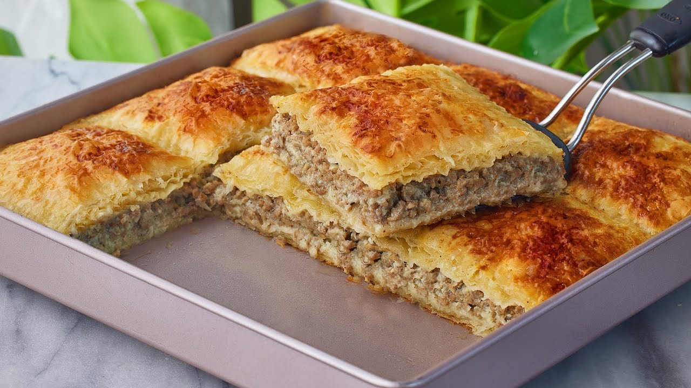

- 500 grams of phyllo pastry (goulash sheets)
- 200 grams of ghee or butter
- - 500 grams of minced meat (beef or chicken, as preferred)
- - 1 large onion, chopped
- Salt and pepper to taste
- Spices (like cinnamon or cumin)
- 2 eggs (optional)
- - 1 cup of milk
- In a pan over medium heat, melt the ghee, then add the chopped onion
and sauté until translucent.
- Add the minced meat and cook until browned.
- Season with salt, pepper, and spices, then let it cool.
- Grease a baking dish with some ghee.
- Start by laying one sheet of phyllo pastry and brush it with ghee. Repeat
this process with 5-6 sheets
- Spread a layer of the meat filling on top of the phyllo.
- Place 2-3 more sheets of phyllo brushed with ghee on top of the filling,
then add another layer of filling.
- Continue this layering until you finish the filling and phyllo, ending with
a top layer of phyllo.
- Before placing it in the oven, mix the eggs with the milk and brush this
mixture over the top layer of phyllo.
- Preheat the oven to 180°C (350°F), then bake for 30-40 minutes or until
the top is golden brown.
- Once slightly cooled, cut the goulash into pieces and serve warm.
Enjoy your meal!